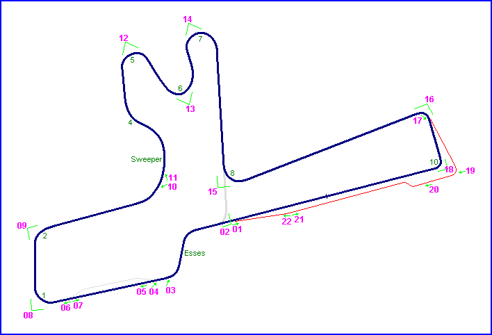
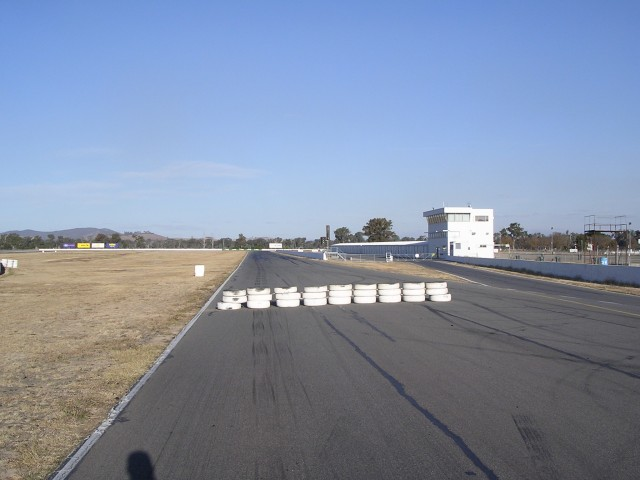
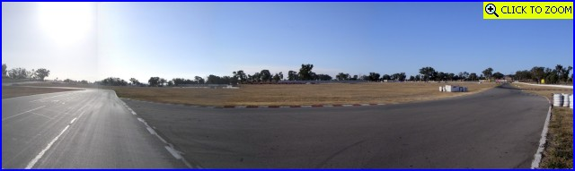
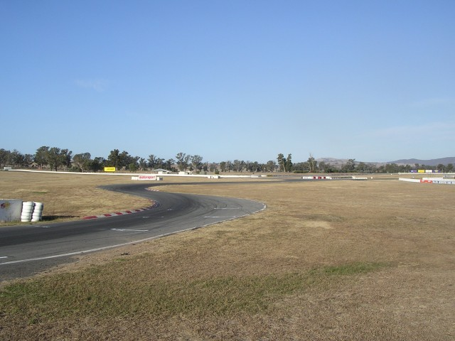
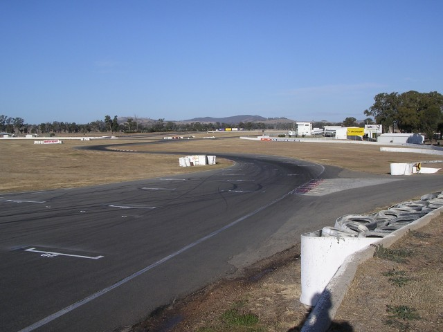
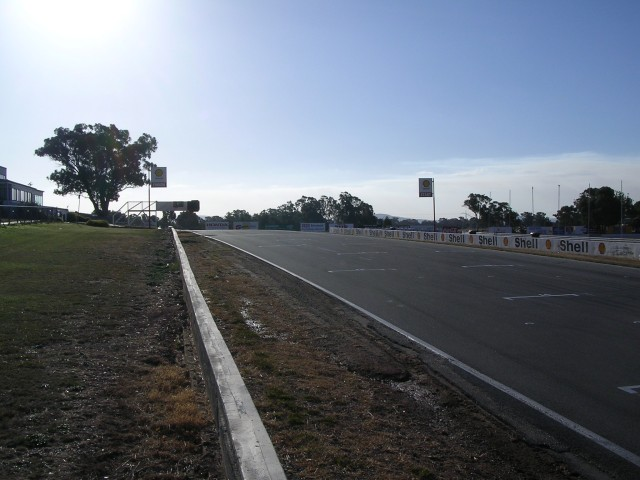
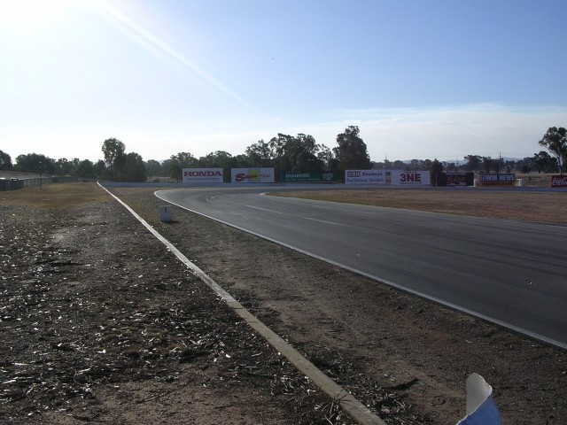
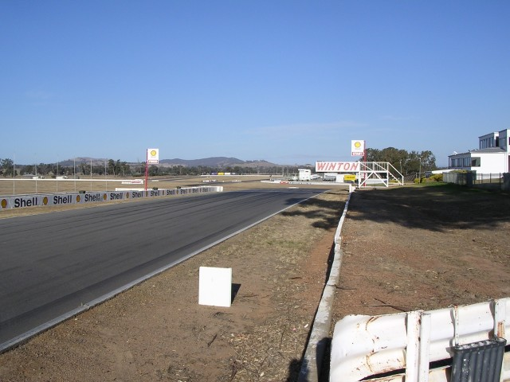
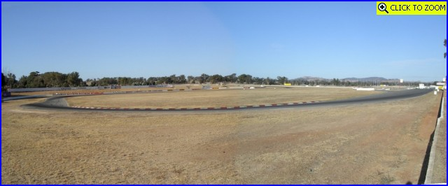

Winton - Start/Finish, Esses & Turn 1
|| Contents || Start - Esses - Turn 1 | Turns 2 to 8 | Turns 9 & 10 / Pits || Home ||

Numbers and arrows on the map represent the location as direction of where the
photographs were taken. Click on hyperlinks above to view the photographs.
Return to racingcircuits.net's Photo Archive Main Index

01 - Looking back down the main straight to the Start/Finish line and Pits
on the Long Circuit.

02 - Approaching the Esses. The short circuit link from Turn 8 joins here
from the right. [Click here to zoom in]

03 - Esses.

04 - Back of the short circuit grid and Esses. Entry to the circuit from
the dummy grid is on the right.

05 - Looking up to the Start/Finish line on the short circuit.

06 - Approaching Turn 1.

07 - Looking at Start/Finish area from the flag point.

08 - Turn 1. [Click
here to zoom in]
Photographs and Text ©Neil Fackerell. Reproduced here with kind permission.